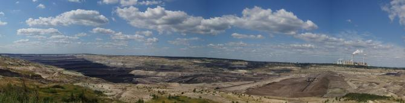
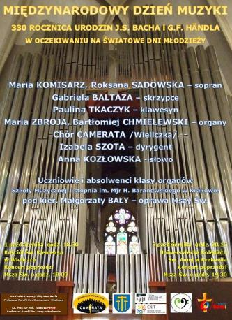
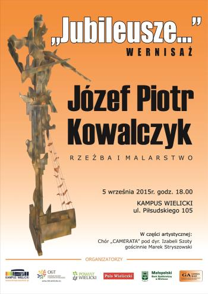
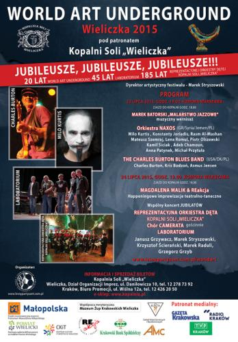
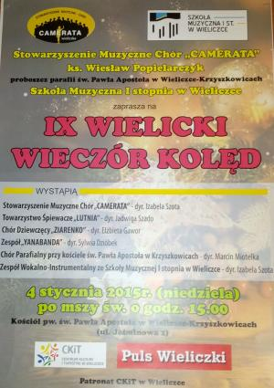

Aktualności archiwalne
Rok 2015
2015-12-19
Galeria Sztuki Współczesnej Bunkier Sztuki a w nim my czyli Camerata. czytaj dalej ...2015-12-15
Spotkanie świąteczne z Cameratą. czytaj dalej ...2015-12-11
Kopalnia Węgla Brunatnego Bełchatów na terenie gminy Kleszczów
a u nich my z pięknym koncertem.
czytaj dalej ...
2015-12-04
Barbórka - 4 grudnia górnicy Kopalni Soli "Wieliczka" spotkali się na wspólnej modlitwie w kaplicy św. Kingi. czytaj dalej ...2015-11-20
„Muzyka łączy pokolenia” – ostatni IV koncert z tego cyklu w Niepołomicach, więc jedziemy do Niepołomic. czytaj dalej ...2015-11-14
20 lat Yanabanda. czytaj dalej ...2015-11-11
Obchody 97 rocznicy Odzyskania Niepodległości. czytaj dalej ...2015-11-10
„Muzyka łączy pokolenia” – koncert w Woli Zabierzowskiej. czytaj dalej ...2015-10-24
55 - lecie Mietniowiaków. czytaj dalej ...2015-10-23
Kolejny koncert z cyklu „Muzyka łączy pokolenia”. Tym razem jedziemy do Tarnowa. czytaj dalej ...2015-10-17
Stowarzyszenie Muzyczne Chór Camerata gości w Wieliczce chór „La Pastourelle” z Hinges z północnej Francji (Nord Pas de Calais) i z tej okazji odbędzie się dzisiaj koncert w Kampusie wielickim. czytaj dalej ...2015-10-10
Śpiewamy dzisiaj w Dąbrowie Tarnowskiej, chór Camerata podbija serca dąbrowskich melomanów. czytaj dalej ...2015-10-1i3
Międzynarodowy Dzień Muzyki 2015
czytaj dalej ...
2015-09-26
Małopolski Bank Spółdzielczy w Wieliczce świętuje 90-lecie. czytaj dalej ...2015-09-05
40 lecie działalności artystycznej oraz wernisaż Józefa Kowalczyka.
czytaj dalej ...
2015-08-08
Ślub w kościele Św. Anny w Krakowie. czytaj dalej ...2015-07-24
Tegoroczny World Art Underground pod hasłem „Jubileusze, jubileusze, jubileusze!!!”. Wiąże się z 20-leciem samego Festiwalu, 45-leciem istnienia grupy Laboratorium oraz 185 rocznicą powstania Reprezentacyjnej Orkiestry Dętej Kopalni Soli „Wieliczka”.
czytaj dalej ...
2015-07-17
Ślub w Kopalni Soli „Wieliczka”. czytaj dalej ...2015-06-27
Dzisiaj mamy dzień pełen wrażeń, muzyki i śpiewu.Zaczynamy o godz. 18.00 od oprawy Mszy Św. w kościele św. Klemensa w Wieliczce oraz koncert po Mszy Św. - pierwsze wykonanie Cantaty J.S .Bacha „Christ lag in Todes Banden” versus I i VII.
Po koncercie mamy drugi koncert na Rynku w Wieliczce podczas Festiwalu Wielickich Artystów. czytaj dalej ...
2015-05-09
Obchody 70 rocznicy zakończenia II wojny światowej w Wieliczce. czytaj dalej ...2015-05-03
W ramach obchodów święta Konstytucji 3 Maja w Kościele Polskim w Budapeszcie odbędzie się uroczysta msza święta, a po niej w Domu Polskim koncert naszego chóru. czytaj dalej ...2015-05-02
Drugi dzień pobytu w Budapeszcie. czytaj dalej ...2015-05-01
Jak co roku Camerata wyjeżdża na obchody święta Konstytucji 3 Maja do Polonii. Tym razem z okazji 224 rocznicy uchwalenia Konstytucji 3 Maja będziemy gościć w Budapeszcie. czytaj dalej ...2015-01-28
Zmarł nasz kolega, jeden z założycieli Cameraty Marek Bzowski. czytaj dalej ...2015-01-21
Noworoczne spotkanie seniorów w kopalni soli. czytaj dalej ...2015-01-18
Dzisiaj w Sanktuarium Matki Bożej Gdowskiej po raz szósty spotkają się zespoły z Wieliczki i Gdowa, aby wspólnie "kolędować Małemu..." czytaj dalej ...2015-01-11
Godz.18.00 Oprawa Mszy Św. i „Oratorium na Boże Narodzenie” w Parafii św. Marcina w Biskupicach czytaj dalej ...2015-01-04
Msza Św. i IX Wielicki Wieczór Kolęd w kościele p.w. św. Pawła Apostoła w Krzyszkowicach
czytaj dalej ...
2015-01-04
Godz.10.30 Msza o beatyfikację Sł. B. br. Alojzego Kosibę u OO.Franciszkanów w Wieliczce czytaj dalej ...
© Stowarzyszenie Muzyczne Chór Camerata Wieliczka
Projekt i wykonanie:  Prowadzenie strony: Małgorzata Wysocka-Cebula
Prowadzenie strony: Małgorzata Wysocka-Cebula